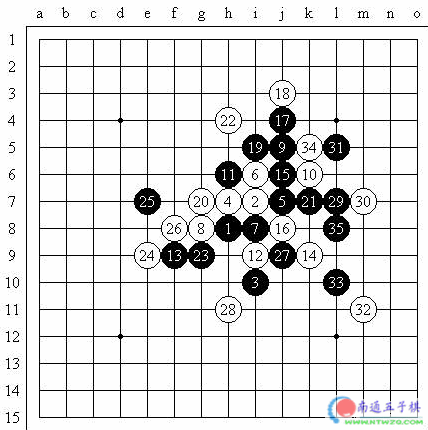
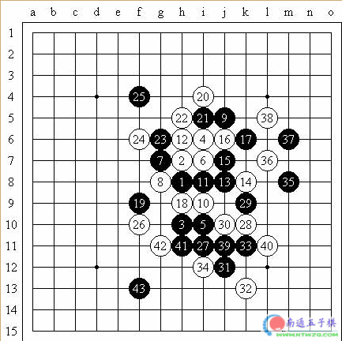
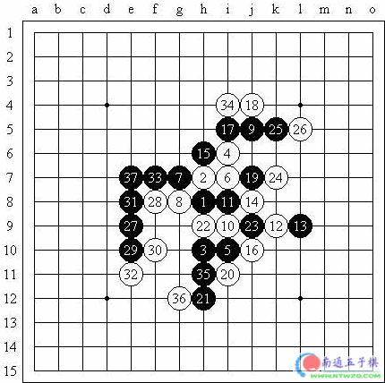
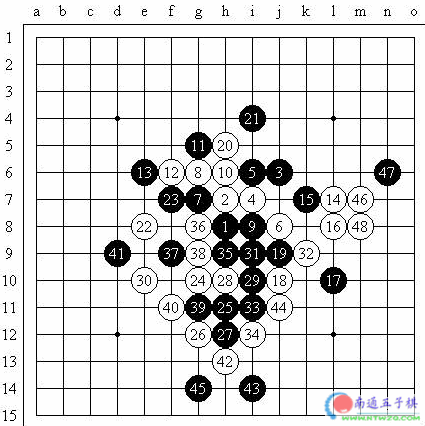
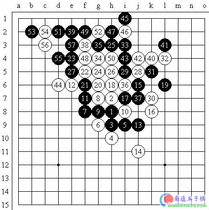
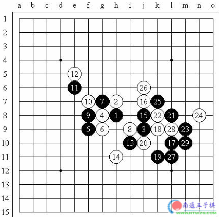
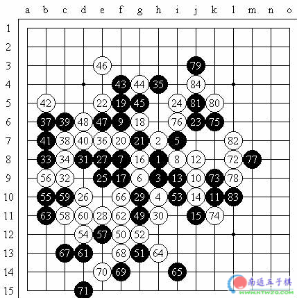
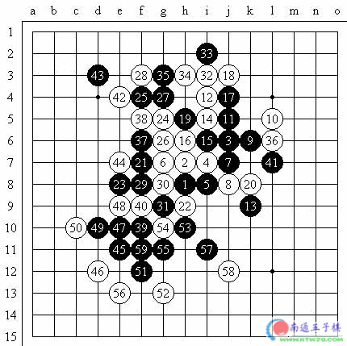
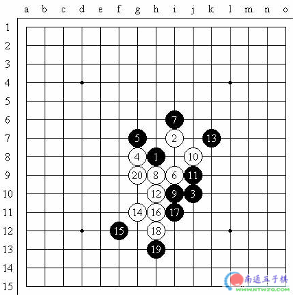

“上海—塔林”网络友情赛
#1 “上海—塔林”网络友情赛作者：莲子 发表时间：2006-1-28 21:57:14
（上海消息 通讯员：风云）1月7日北京时间17:00，上海连珠会与爱沙尼亚连珠联盟在ORC联合举办“上海—塔林”迎新年网络友情赛。本次比赛主要规定如下：
1、每方队员5人（女性1人），队员1人，其中1名选手作为主将，主将必须为1号。
2、替补选手由领队决定其是否上场。
3、共进行2场，第1场按照编号由小到大相碰，第2场按照相同编号相碰。
4、采用RIF现行规则，每方第一时限30分钟，第二时限10分钟10手棋，超时判负。
5、如因不可抗因素导致选手掉线，经双方裁判协商同意，可以继续对局。
6、为确保比赛公正、公平，双方各明确1名领队和裁判（可以兼任）。
虽然是网络赛，但双方都相当重视，为确保赛事公正，双方承诺：
1、比赛当天，各方参赛选手都将集中在一个场所上网。
2、坚决反对使用任何辅助计算工具或手段进行对局，一经发现，将立即判负，并对违反者予以严惩。
目前，双方阵容如下：
上海队：李洪斌 八段（主将）、朱建锋 六段、陈文夏 五段、蔡力捷四段、顾婉卿二段（女）
上海队领队：顾炜 七段
上海队裁判：黄民城 二段
塔林队：Ando Meritee 9Dan（主将）,Timo Ilu 6Dan,Andry Purk 6Dan,Aivo Oll 5Dan,Ester Eggert 1Kyu(female)
塔林队领队：Ants 7Dan
塔林队裁判：Ants 7Dan
#2 “上海—塔林”网络友情赛之李洪斌 vs Ando Meritee作者：莲子 发表时间：2006-1-28 22:01:05
黑：李洪斌八段白：Ando Meritee9Dan （交换）岚月 5A=11 黑33胜

黑：Ando Meritee9Dan 白：李洪斌八段（不交换）瑞星 5A=10 黑43胜

#3 “上海—塔林”网络友情赛之朱建锋 vs Andry Purk作者：莲子 发表时间：2006-1-28 22:05:22
黑：朱建锋六段白：Andry Purk6Dan（不交换）瑞星 5A=10黑37胜

黑：Andry Purk6Dan白：朱建锋六段（不交换）疏星 5A=7 白50胜

#4 “上海—塔林”网络友情赛之俞满江 vs Aivo Oll作者：莲子 发表时间：2006-1-28 22:08:20
黑：俞满江五段白：Aivo Oll5Dan（交换）松月 5A=13黑57胜

黑：Aivo Oll 5Dan 白：俞满江五段（交换）新月5A=I6 黑29胜

#5 “上海—塔林”网络友情赛之蔡力捷 vs Timo Ilu作者：莲子 发表时间：2006-1-28 22:11:16
黑：蔡力捷四段白：Timo Ilu6Dan（交换）松月 5A=8 白84和

黑：Timo Ilu6Dan 白：蔡力捷四段（不交换）疏星5A=6 黑59胜

#6 “上海—塔林”网络友情赛之Ester Eggert vs 顾婉卿作者：莲子 发表时间：2006-1-28 22:12:48
黑：Ester Eggert1Kyu白：顾婉卿二段（不交换）流星 5A=6 白20胜
#7 Re:“上海—塔林”网络友情赛作者：江南新绿 发表时间：2006-2-5 21:34:26
感觉下的还是太快了#8 Re:“上海—塔林”网络友情赛作者：雁儿 发表时间：2006-3-7 19:28:02
学习过了，谢谢#9 Re:“上海—塔林”网络友情赛作者：潇洒 发表时间：2009-3-30 17:02:27
2楼的图看不见了